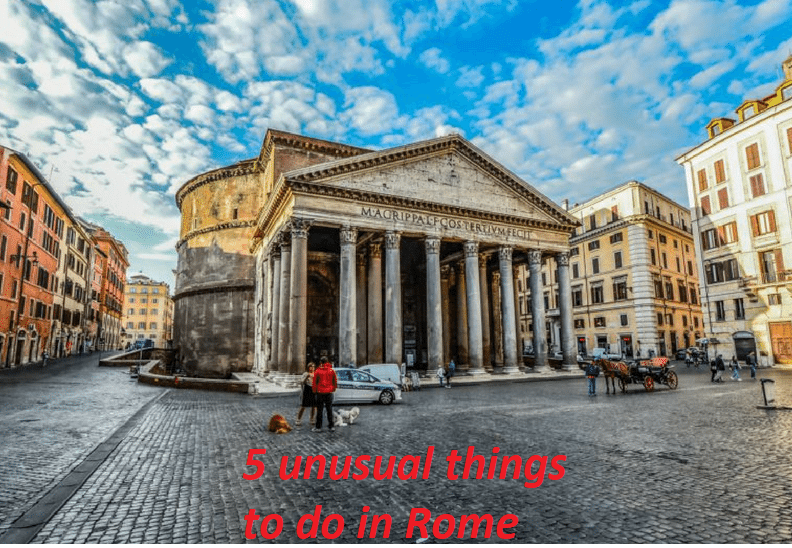

Unusual Things to do in European cities
Our top picks of unusual things to do in the following European cities:
Rome, Amsterdam, Paris, London, stockholm, Prague, Vienna, Lisbon, Berlin, Athens, Madrid, Brussels
Top 5 unusual things to do in...
Rome
Walk along the Appian Way
I wrote once before about why you must visit the Via Appia and how it was a perfect quiet space for ridding myself of jet lag after a long flight, yet I’d encourage anyone to take a bus to walk along the ancient road that points a straight route out of the city. Green spaces and ancient monuments line both sides of the pathway and make for a pleasing scene if walked or biked along, especially for those looking for things to do in Rome for families or larger groups.
Amsterdam

Experience The Netherlands in 5D flight with This Is Holland
the Netherlands is so much more than just Amsterdam. That is the idea behind the flight experience by This Is Holland. During the 9-minute flight, you will discover many must-see locations that you didn’t even know existed! I say this with full confidence: I saw impressed Dutchies exit This Is Holland as well. The flight experience is very well thought out: it feels like a great adventure, you get to feel the seawater spray, you get to breathe in the sweet smell of the flower fields, and you get to discover so many locations that will make you want to go beyond Amsterdam!
Paris
Petite Ceinture (Abandoned railway line circling the city of Paris.)
The Petite Ceinture railway circling through the city of Paris served urban travelers from 1862 to 1934 before being abandoned. Predating the Paris Métro, the “little belt” railroad connected the main train stations and provided needed fortification for the city. Construction was started in 1852 under the Empire of Napoléon III and Baron Haussmann. Certain stretches are now overgrown with over 200 species of flora and fauna, vibrant with colorful flowers and greenery against vivid graffiti and street art. Bridges, tunnels, and the original tracks remain mostly untouched, hidden just beyond the streets and neighborhoods of the outer arrondissements. A good way to see some old train stations is to enter via Villa du Bel Air and exit at the old Gare de Charonne before the tunnel. The majority of the tracks are still owned and managed by the SNCF, and are still in working order, notably the sections that link the Gare de Bercy with the Gare de Nord and Gare de l’Est in the east of the city. City officials in cooperation with SNCF have begun a program to open up parts of the Petite Ceinture to the communities it runs through. The project is a long term undertaking but has already seen several parts turned into walkways and parks.
London

Drink coffee in a Victorian toilet at the Attendant
The Attendant has a number of cafés in the city, but it’s the Fitzrovia one you’ll want to visit. In Victorian times the space was a public toilet, and the old urinals are now a main focal point of the interior (but don’t worry, they’ve been cleaned). The beautiful wrought-iron entrance is another reason to visit the café, which looks so authentic that baristas say they regularly have to turn away people who think it’s still a functioning public toilet.